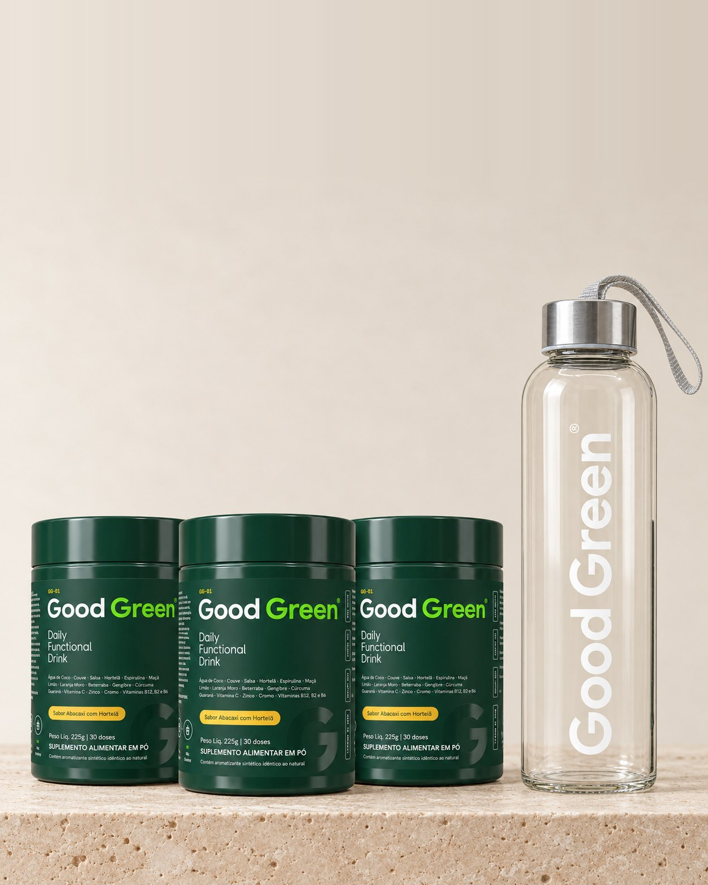
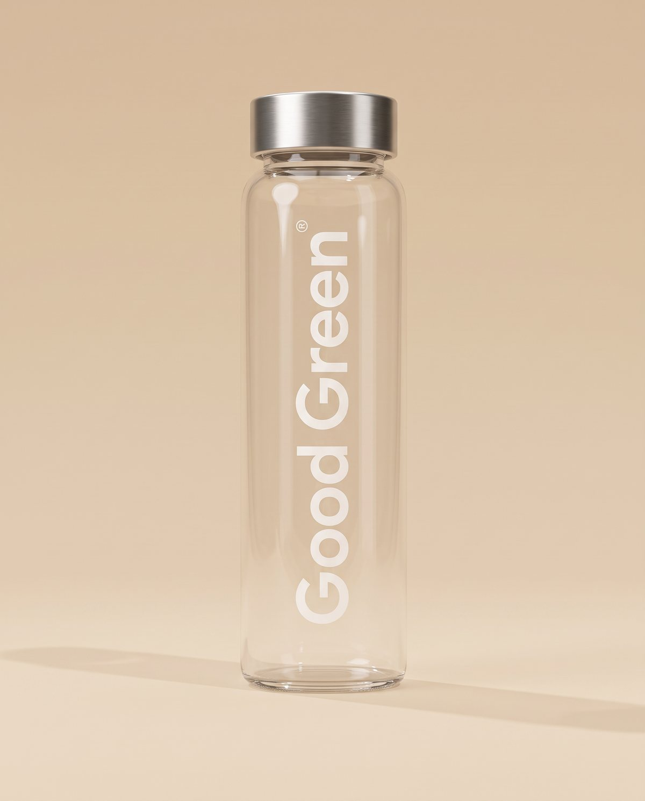
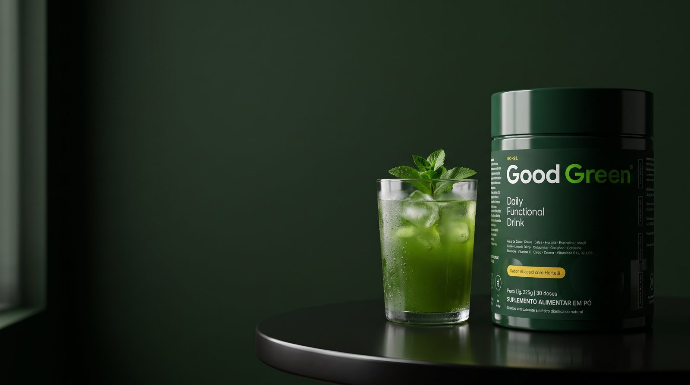

Garrafa de vidro de brindeFrete grátis no trimestralSem fidelidadeGarrafa de vidro de brindeFrete grátis no trimestralSem fidelidadeGarrafa de vidro de brindeFrete grátis no trimestralSem fidelidadeGarrafa de vidro de brindeFrete grátis no trimestralSem fidelidade
Assinatura trimestral
3 potes e a garrafa de vidro de brinde.
3 potes de Good Green a cada 90 dias, com frete grátis e a garrafa de vidro no primeiro pedido. Sabor abacaxi com hortelã.
Sem fidelidade · pause ou cancele quando quiser
GRÁTISgarrafa de vidro no 1º pedido
Garrafa de vidro de brindeFrete grátis no trimestralSem fidelidadeGarrafa de vidro de brindeFrete grátis no trimestralSem fidelidadeGarrafa de vidro de brindeFrete grátis no trimestralSem fidelidadeGarrafa de vidro de brindeFrete grátis no trimestralSem fidelidade
Sua oferta
3 potes de Good Green a cada 90 dias. O brinde e o frete grátis já saem aplicados no checkout.
Kit trimestral · 3 potes

O que vem na caixa
Good Green GG-01Pote 1 · abacaxi com hortelã
R$ —
Good Green GG-01Pote 2 · abacaxi com hortelã
R$ —
Good Green GG-01Pote 3 · abacaxi com hortelã
R$ —

Garrafa de vidroBrinde no 1º pedido
Grátis
3 potes de 225 g, 30 doses cada
Frete grátis no plano trimestral
Pause ou cancele quando quiser
Total · melhor valorDe R$ —R$ —/ 90 dias · R$ — por dose
Pagamento seguro · Sem fidelidade · Frete grátis no trimestral

Couve, espirulina e guaraná
Good Green GG-01
Uma medida de 7,5 g em 300 ml de água, uma vez ao dia. Vitaminas C, B2, B6 e B12, cromo, zinco e a cafeína do guaraná, com sabor abacaxi com hortelã.
Misture uma medida (7,5 g) em 300 ml de água até ficar homogêneo. Gelada fica melhor. Uma vez ao dia.
45 mg de vitamina C, 100% do VD de B6 e B12, 571% do VD de cromo, 64% do VD de zinco e 75 mg de cafeína do guaraná. Base de couve, espirulina, gengibre e cúrcuma.
O abacaxi com hortelã aparece primeiro no gole: leve e refrescante. Zero gosto de grama.
Adultos que querem verdes na rotina sem liquidificador. Indicado para maiores de 19 anos. Não deve ser consumido por gestantes, lactantes e crianças. Contém cafeína.
Garrafa de vidro de brindeFrete grátis no trimestralSem fidelidadeGarrafa de vidro de brindeFrete grátis no trimestralSem fidelidadeGarrafa de vidro de brindeFrete grátis no trimestralSem fidelidadeGarrafa de vidro de brindeFrete grátis no trimestralSem fidelidade
Comece amanhã de manhã.
Uma medida no copo ou na garrafa de vidro. Sem lavar, cortar ou bater.
Garrafa de vidro de brinde
No primeiro pedido da assinatura, enquanto durar o lote.
Sem fidelidade
Pause ou cancele quando quiser, sem multa.
Frete grátis no trimestral
3 potes a cada 90 dias, chegando antes de acabar.
Este produto não é um medicamento. Não exceder a recomendação diária de consumo indicada na embalagem. Indicado para maiores de 19 anos. Não deve ser consumido por gestantes, lactantes e crianças. Contém cafeína (guaraná). Produto notificado, dispensado de registro conforme RDC 240/2018. Garrafa de vidro de brinde válida para o primeiro pedido da assinatura, enquanto durar o lote. Frete grátis no plano trimestral. A assinatura pode ser pausada ou cancelada a qualquer momento, sem multa.